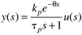
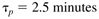

| [ Team LiB ] |
|
4.2 First-Order + Dead TimeRecall that a first-order + dead-time process, represented by the transfer function relationship  has the following output response to a step input change, where the measured output is in deviation variable form. The three process parameters can be estimated by performing a single step test on the process input. The gain is found as simply the long-term change in process output divided by the change in process input. Also the time delay is the amount of time, after the input change, before a significant output response is observed. There are several easy ways to estimate the time constant for this type of model. Time for 63.2% Approach to New Steady StateIn Equation (4.2), if we set t = tp + q, we find y(t = tp + q) = kpDu(1 - exp(–1)) = 0.632kpDu. Now, since kpDu is simply the long-term change in the process output, then t63.2% = tp + q is the amount of time it takes for the output to make 63.2% of its ultimate change. This method of estimating the time constant is illustrated in Figure 4-1. Figure 4-1. Estimating the time constant from a response to a step input.
Example 4.1: Numerical Application of 63.2% MethodConsider the response to a step input change at t = 1 minute, shown in Figure 4-2. The measured output is shown as the noisy solid curve, and a "best fit" first-order + time-delay model is shown as the dashed curve. Here we find the process gain from Figure 4-2. Example of the step response with measurement noise.The time delay is observed to be 1 minute, and the time constant is the time it takes (after the time delay) for the output to change by 0.632(-2) = -1.3°C. That is, the time when y = 23.7°C. In this case,  and the process transfer function is Maximum Slope MethodWe can also find (see Exercise 1) that the maximum slope of the output response to a step input change at t = 0 occurs at t = q and is So the time constant can be estimated from A major disadvantage is that the slope estimate may not be accurate if there is significant measurement noise. This approach is particularly useful for higher-order responses that are approximated as a first-order + time-delay response, as shown in the following example. Example 4.2: Maximum Slope MethodThe response of a high order process is shown in Figure 4-3. Here, the dashed line is drawn through the maximum slope of the output response. The slope is Figure 4-3. Example of the slope method for estimation of time constant.Since the process gain is kp = Dy/Du = 6°C/2 gpm = 3°C/gpm, and the time-delay is 8-1 = 7 min, the first-order + time-delay transfer function is estimated as Two-Point Method for Estimating Time ConstantA technique similar to the first one, but using two points on the output response, is shown in Figure 4-4. Here the time required for the process output to make 28.3% and 63.2% of the long-term change is denoted by t28.3% and t63.2%, respectively. The time constant and time delay can be estimated from (see Exercise 2) Figure 4-4. Example of the two-point method for estimation of time constant.Limitation to FODT ModelsThe primary limitation to using step responses to identify first-order + dead-time transfer functions is the amount of time required to assure that the process is approaching a new steady state. That is, the major limit is the time required to determine the gain of the process. For large time constant processes it is often desirable to use a simpler model that does not require a long step test time. The integrator + dead-time model shown next will often be good enough for control-system design. |
| [ Team LiB ] |
|